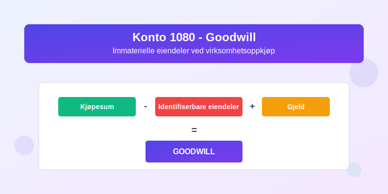
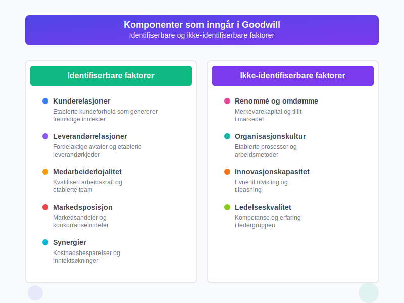
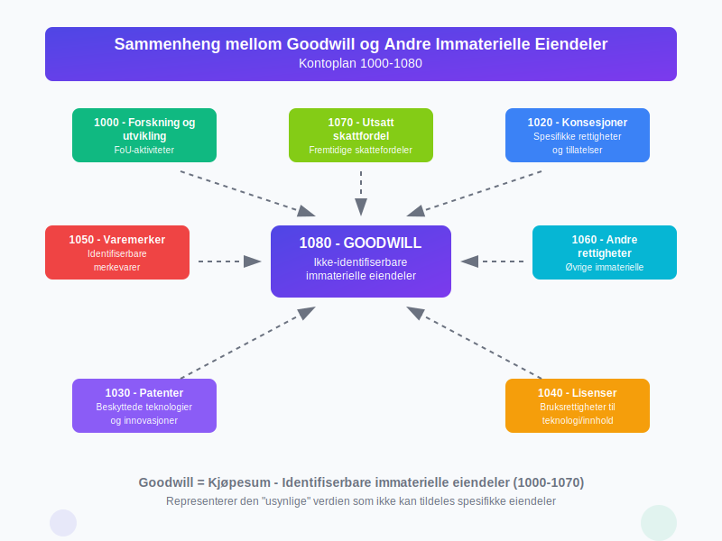

Konto 1080 - Goodwill er en av de mest komplekse kontiene i norsk kontoplan og representerer den delen av anskaffelseskostnaden for en virksomhet som overstiger virkelig verdi av de identifiserbare anleggsmidlene. Denne kontoen brukes for å registrere goodwill som oppstår ved virksomhetsoppkjøp og representerer immaterielle eiendeler som ikke kan identifiseres separat.

Hva er Goodwill?
Goodwill er en immateriell eiendel som representerer den ekstra verdien en virksomhet har utover summen av dens identifiserbare eiendeler og gjeld. I regnskapsmessig sammenheng skilles det mellom:
- Kjøpt goodwill: Oppstår ved oppkjøp av virksomheter og aktiveres på konto 1080
- Egenutviklet goodwill: Kan ikke aktiveres og må kostnadsføres løpende
Hvordan oppstår Goodwill?
Goodwill oppstår når en virksomhet kjøper en annen virksomhet til en pris som overstiger den netto bokførte verdien av de identifiserbare eiendelene. Beregningen gjøres slik:
| Komponent | Beskrivel se |
|---|---|
| Kjøpesum | Total betalt for virksomheten |
| Minus: Identifiserbare eiendeler | Varelager, kundefordringer, anleggsmidler etc. |
| Pluss: Overtatte forpliktelser | Leverandørgjeld, lån, avsetninger etc. |
| Resultat = Goodwill | Differansen aktiveres på konto 1080 |

Elementer som inngår i Goodwill
Identifiserbare faktorer
- Kunderelasjoner og kundebase: Etablerte kundeforhold som genererer fremtidige inntekter
- Leverandørrelasjoner: Fordelaktige avtaler og etablerte leverandørkjeder
- Medarbeiderlojalitet: Kvalifisert arbeidskraft og etablerte team
- Markedsposisjon: Markedsandeler og konkurransefordeler
- Synergier: Kostnadsbesparelser og inntektsøkninger ved sammenlåing
Ikke-identifiserbare faktorer
- Renommé og omdømme: Merkevarekapital og tillit i markedet
- Organisasjonskultur: Etablerte prosesser og arbeidsmetoder
- Innovasjonskapasitet: Evne til utvikling og tilpasning
- Ledelseskvalitet: Kompetanse og erfaring i ledergruppen

Regnskapsføring av Goodwill
Ved oppkjøp
Når goodwill oppstår ved virksomhetsoppkjøp, bokføres det på følgende måte:
Debet: Konto 1080 - Goodwill XXX kroner
Kredit: Konto 1900 - Bankinnskudd XXX kroner
Nedskrivningsvurdering
Goodwill skal ikke amortiseres, men må vurderes for nedskrivning årlig. Nedskrivning bokføres slik:
Debet: Konto 6890 - Nedskrivning av goodwill XXX kroner
Kredit: Konto 1080 - Goodwill XXX kroner
Vurdering og nedskrivning
Årlig nedskrivningstest
Goodwill skal testes for nedskrivning minst en gang årlig eller når det foreligger indikasjoner på verdifall. Testen sammenligner:
- Bokført verdi: Goodwill pluss andre eiendeler i kontantgenererende enhet
- Gjenvinnbar verdi: Høyeste av bruksverdi og virkelig verdi minus salgsutgifter
Indikatorer på nedskrivning
- Betydelig fall i markedsverdi
- Negative endringer i teknologi eller marked
- Økte renter som påvirker diskonteringsraten
- Bokført verdi av netto eiendeler overstiger markedsverdi

Praktiske eksempler
Eksempel 1: Oppkjøp av mindre virksomhet
En virksomhet kjøper en konkurrent for 5 millioner kroner. Regnskapsanalysen viser:
- Kjøpesum: 5 000 000 kroner
- Identifiserbare eiendeler: 4 200 000 kroner
- Overtatte forpliktelser: 1 500 000 kroner
- Netto identifiserbare eiendeler: 2 700 000 kroner
- Goodwill: 2 300 000 kroner
Eksempel 2: Nedskrivning av goodwill
Etter tre år viser analysen at den kontantgenererende enheten har en gjenvinnbar verdi på 1 800 000 kroner, mens bokført verdi er 2 300 000 kroner. Nedskrivning på 500 000 kroner må bokføres.
Forskjeller mellom regnskapsregler
Norske regnskapsstandarder (NGRS)
- Goodwill skal amortiseres over økonomisk levetid (maks 20 år)
- Lineær amortisering er hovedregel
- Nedskrivning når bokført verdi overstiger gjenvinnbar verdi
Internasjonale regnskapsstandarder (IFRS)
- Goodwill skal ikke amortiseres
- Årlig nedskrivningstest er obligatorisk
- Mer detaljerte krav til dokumentasjon
Utfordringer og fallgruver
Vanlige feil ved goodwill-regnskapsføring
- Feil beregning: Ikke identifisering av alle immaterielle eiendeler
- Manglende nedskrivningstest: Utsettelse av nødvendige nedskrivninger
- Feil allokering: Fordeling av goodwill på feil kontantgenererende enheter
- Utilstrekkelig dokumentasjon: Manglende begrunnelse for verdivurderinger
Best practice anbefalinger
- Gjennomfør grundig due diligence før oppkjøp
- Dokumenter alle verdivurderinger og antagelser
- Etabler rutiner for årlig nedskrivningstest
- Konsulter regnskapsfaglig ekspertise ved komplekse transaksjoner
Sammenheng med andre kontoer
Goodwill har nær sammenheng med andre kontoer i balansen:
- Konto 1000 - Forskning og utvikling: Identifiserbare immaterielle eiendeler
- Konto 1020 - Konsesjoner: Spesifikke rettigheter som kan skilles ut
- Konto 1030 - Patenter: Beskyttede teknologier og innovasjoner
- Konto 1040 - Lisenser: Bruksrettigheter til teknologi eller innhold
- Konto 1050 - Varemerker: Identifiserbare merkevarer
- Konto 1060 - Andre rettigheter: Øvrige identifiserbare immaterielle eiendeler

Regulatoriske krav
Revisjonspliktige virksomheter
- Årlig nedskrivningstest: Obligatorisk for alle virksomheter med goodwill
- Noteopplysninger: Detaljert informasjon om endringer i goodwill
- Sensitivitetsanalyse: Vurdering av følsomhet for endringer i forutsetninger
Rapportering i årsregnskap
Følgende opplysninger skal gis i noter til årsregnskapet:
- Brutto bokført verdi ved årets begynnelse og slutt
- Akkumulerte nedskrivninger
- Tilgang ved oppkjøp i regnskapsåret
- Nedskrivninger foretatt i året
- Valuta- og andre justeringer
Konklusjon
Konto 1080 - Goodwill er en kompleks, men viktig del av norsk regnskapsføring. Korrekt håndtering krever:
- Nøyaktig beregning ved oppkjøp
- Regelmessig nedskrivningstest for å sikre korrekt verdsetting
- Grundig dokumentasjon av alle vurderinger og beslutninger
- Kontinuerlig oppfølging av verdifendringer
Ved å følge gjeldende regnskapsstandarder og beste praksis kan virksomheter sikre at goodwill reflekterer den faktiske verdien av immaterielle eiendeler og gir interessenter et korrekt bilde av virksomhetens finansielle stilling.